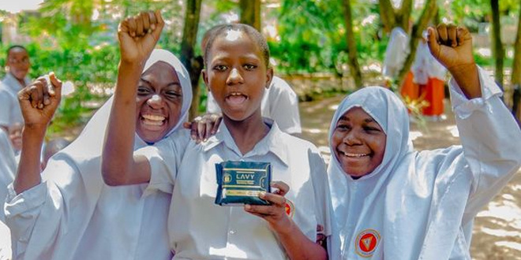

This are projects and our works
.jpg)
SANITARY PADS
" The OSIM Foundation actively supports local communities, especially schools, by addressing the crucial need for sanitary pads. We're committed to providing these pads to ensure a healthy learning environment, focusing on empowering female students and breaking down barriers to education. Our initiative collaborates with schools and community leaders to implement sustainable menstrual hygiene programs, prioritizing education and challenging the stigma around menstruation. "
MATERNAL AND INFANT CARE
The OSIM Foundation focuses on maternal and infant care as integral components of our community well-being approach. We implement initiatives to support mothers and infants in accessing essential healthcare and nutrition. Our programs provide expectant mothers with prenatal education, healthcare, and nutritional support for healthy pregnancies. Postnatally, we assist new mothers with breastfeeding, proper nutrition, and infant hygiene. Through collaboration with local professionals and community leaders, we aim to create a nurturing environment, contributing to breaking the cycle of malnutrition and fostering healthier communities. ."

MALNUTRITION
The OSIM Foundation is dedicated to tackling malnutrition in local communities by providing essential food services. Our mission is to enhance nutritional well-being through targeted initiatives, ensuring individuals and families have access to nourishing meals for their health and development. We collaborate with communities to address specific nutritional challenges, focusing on sustainable, community-driven programs. By working closely with community members, we aim to create a supportive environment that empowers individuals to overcome malnutrition and lead healthier lives. Through food services, OSIM Foundation seeks to make a meaningful difference in the lives of those facing malnutrition, contributing to the overall well-being of the communities we serve.Our Home
.png)
Contact
- Phone:+255769933368
- Phone:+255766876286
- Email: info@OsimFoundation.org